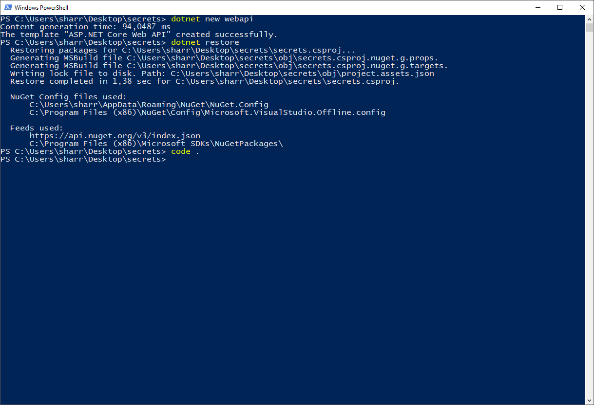
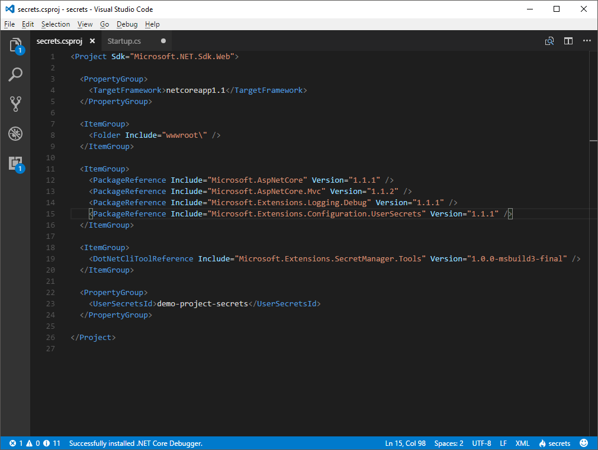
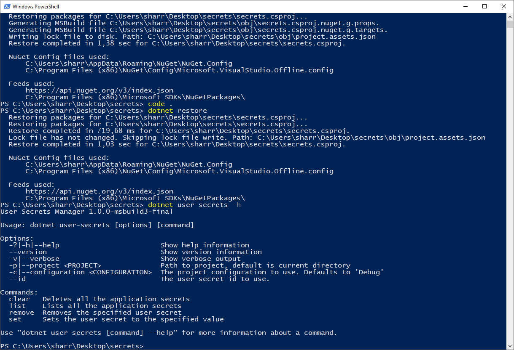
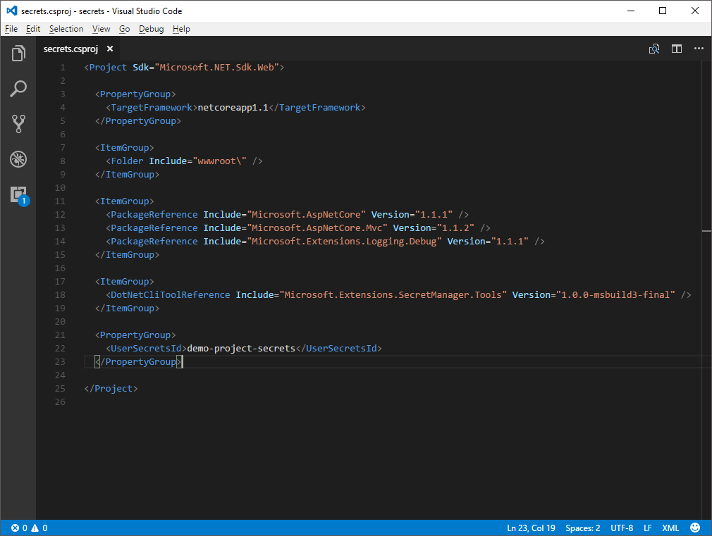
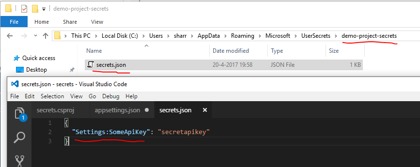
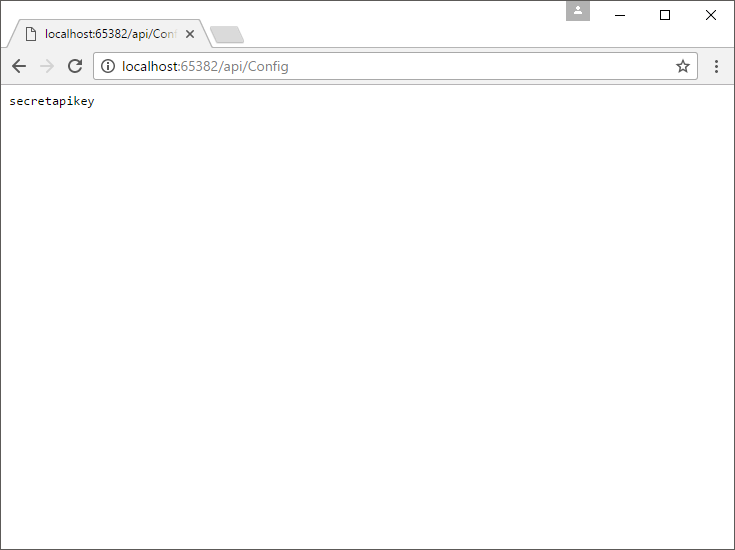
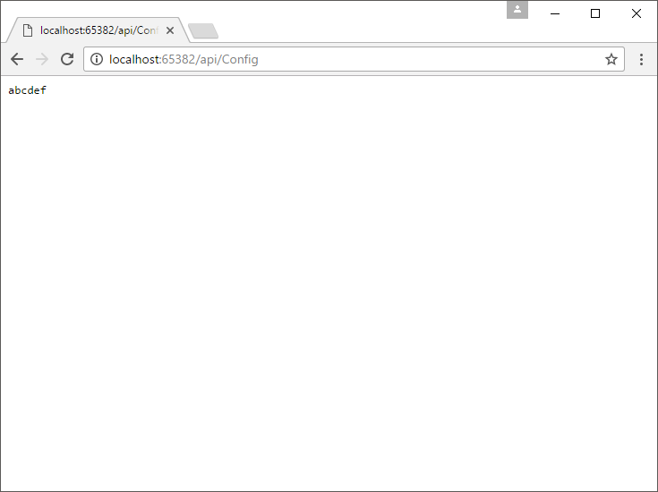

Dotnet Core CLI user secrets
User secrets are what you use for settings in a .NET Core app that you don't want committed to your public repos (think API keys, passwords, anything sensitive). You map out your actual settings and they override them with the values from the secrets, which are stored outside of the tracked source folder.
On windows the user secrets folder is located here: %APPDATA%\microsoft\UserSecrets. Let's have a look at how use them with the new tooling for .NET Core that came out recently.
Create a little test project to play around, I've used a webapi project for these examples. Create the project in a folder of your choosing with the dotnet new webapi command.

Restore the packages (dotnet restore) and open the project (code . I'm using Visual Studio Code).
The command to set up user secrets is dotnet user-secrets but before we can use it, we need to tell dotnet that it is part of our project. To enable the user secrets tooling we need to make a change to the .csproj file. Open the project file and add the following code.
<ItemGroup>
<DotNetCliToolReference Include="Microsoft.Extensions.SecretManager.Tools" Version="1.0.0-msbuild3-final" />
</ItemGroup>To enable the use of secrets in the configuration system add the following package reference:

Save the .csproj file and restore the packages. You need to run the restore command before you can start using the user-secret command! Otherwise the additional tooling isn't available to the dotnet command. To make sure we have it all set up, run the dotnet user-secrets -h to what it offers.

We need one last component before we can start adding settings and secrets to our project. We need to give the project a unique id that identifies the user secrets file that belongs to this project. Go back to the .csproj file and add the following code to it:
<PropertyGroup>
<UserSecretsId>demo-project-secrets</UserSecretsId>
</PropertyGroup>You can choose any name you want but remember that it serves as an identifier for the project!

Let's add a setting to the appsettings.json file and create a secret override for it using the user-secrets tooling.
{
"Logging": {
"IncludeScopes": false,
"LogLevel": {
"Default": "Warning"
}
},
"Settings": {
"SomeApiKey": "abcdef"
}
}I chose an extra group Settings with a setting called SomeApiKey with the value abcdef. Grab the command line and add the a secret override for this setting to the user secrets file: dotnet user-secrets set Settings:SomeApiKey secretapikey. Note the : between Settings and SomeApiKey. The tooling does not support nested objects the way JSON describes them. Instead, the properties are flattened and then written to a JSON object without nesting. The .NET Core configuration system doesn't care about the literal notation of the settings and will read them correctly when it loads the configuration files. The only requirement is that any nesting is noted with the : separator (think folder paths in explorer, except it's now JSON :-)
If we go and look in the secrets folder (%APPDATA%\microsoft\UserSecrets\) we will find a folder with our key as its name containing a secrets.json file.

Using the user secrets in a project
Now that we have all this set up, we need to tell the configuration system of your project that we have user secrets and that it should load them when we are in development mode. As mentioned above, these user secrets are strictly for things you don't want ending up in your source repositories where they are possibly out in the open! Use them for development purposes only.
We'll run down some code to get the settings up and running. Open the Startup.cs file and go to the Startup(HostingEnvironment env) method. Update the method body to the following code below. Note that the development check goes at the end of the builder config chain.. This ensures that any config that was previously loaded is overwritten by a secret if we have one.
var builder = new ConfigurationBuilder() .SetBasePath(env.ContentRootPath) .AddJsonFile("appsettings.json", optional: false, reloadOnChange: true) .AddJsonFile($"appsettings.{env.EnvironmentName}.json", optional: true) .AddEnvironmentVariables();
if(env.IsDevelopment())
{
builder.AddUserSecrets
Configuration = builder.Build();
Register the options as a dependency in the ConfigureServices method:
public void ConfigureServices(IServiceCollection services)
{
services.AddOptions();
services.Configure
// Add framework services. services.AddMvc(); }
The following class is used to create a typed representation of our settings.
namespace secrets.Model { public class Settings { public string SomeApiKey { get; set; } } }
Because we have a class (Settings) for our settings that is available in the services collection we can inject the settings into a controller. Add a new controller to expose our setting value that receives the options from the configuration system via constructor injection.
using Microsoft.AspNetCore.Mvc; using Microsoft.Extensions.Options; using secrets.Model;
namespace secrets.Controllers { [Route("api/[controller]")] public class ConfigController : Controller { private readonly Settings _settings;
public ConfigController (IOptions
[HttpGet] public string ConfiguredKey() { return _settings.SomeApiKey; } } }
Run the project and point your browser to http://localhost:<port>/api/Config (the port can vary, look at the console output to see which one it chose). If all the stuff we did so far is set up right you should get the following response from the api:

It gives us the value from secrets.json we configured earlier! Even though our appSettings.json file says that the value should be abcdef. You can now safely commit a dummy setting to your repo in the appSettings and keep the real value locally on your development system.
One last test to make sure we can still get the actual value from appSettings.json. Remove the secret from our secrets file by running the following command: dotnet user-secrets remove Settings:SomeApiKey. Run the project again and call the Config endpoint.

Knowing all this, you can now start using user secrets on a per-project basis and prevent leaking those keys, passwords and other sensitive things in a commit to your (possibly) public repo. We even covered a good part of the configuration system to boot. Just keep in mind that this system is only intended for the development cycle and nothing beyond that. Use environment variables where possible on the hosting environment, that way, you have no settings to struggle with and you can set empty values in the appSettings file.
Keep those secrets secret!